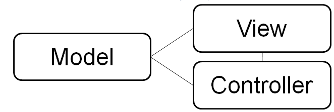
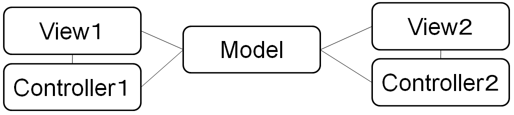
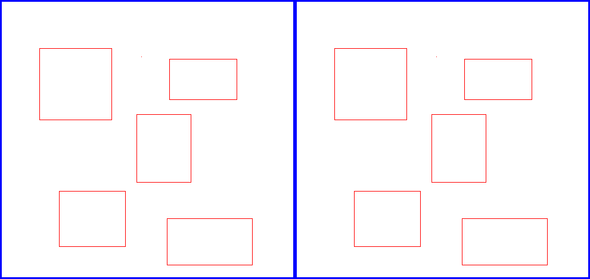

前回まで，Javaによるオブジェクト指向プログラミングと，Swingを用いたGUIプログラミングについて勉強してきました．まだJavaのすべてを勉強したという訳ではありませんが，基本的な内容は一通り勉強しましたので，次のステップとして，Javaを実際に使いこなすことを目標としていきましょう．
C言語でも語学(英語)でも同じですが，文法が分かったからと言ってそれだけでその言語を使いこなせるようにはなりません．基本をおさえたら，後は多少知らないことがあっても実際に言語を使ってみることが重要です．
使ってみるということは，経験を積むということです．ただし，闇雲に経験を積もうとしても時間がかかるばかりです．効率的に経験を積むには，先人の経験を利用させてもらうのが近道です．
そのために，今まで講義や演習でアルゴリズム(algorithm)やデータ構造(data structure)を学習してきました．アルゴリズムは問題の解法，データ構造はデータの表現の仕方で，それぞれ一般的な知識でプログラミング言語には依存しません．このような知識は重要ですが，大規模なプログラムを構築するときにどのようにクラスを組み立ててプログラムを設計すればいいかというオブジェクト指向特有の経験は含まれていません．
Javaプログラミングをマスターするには，問題の解法やデータの表現方法とは異なる，オブジェクト指向プログラムの「書き方」を勉強することが重要です．そのために，パターン(pattern)というものが用意されています．
パターンは，オブジェクト指向におけるクラスの組み合わせなどの典型的な書き方をまとめたもので，これを勉強することで，オブジェクト指向プログラミングの経験を効率的に学ぶことが可能となります．
今回はオブジェクト指向のパターンとして，GUIプログラムのパターンであるModel-View-Controllerモデル（略して，MVCモデル）と，MVCモデルで用いられるObserverパターンについて説明します．
前者のMVCモデルはプログラム構成法のパターンでアーキテクチャパターンと呼ばれるものの一種です．一方，後者のObserverパターンは，オブジェクト指向におけるクラスの組み合わせ方のパターンで，デザインパターンと呼ばれています．こちらはMVCモデルよりは規模の小さなパターンとなります．
GUIプログラムの開発手法の一つに，Model-View-Controllerモデル（略して，MVCモデル）があります．
この手法では，GUIシステムを大きく分けて，データを扱うmodel，表示を行うview，ユーザからの入力を処理するcontroller，の3つの部分に分けて構築します．それぞれの部分は，Javaの場合，中心となるクラスと補助的なクラスから構成されます．それぞれの部分をもう少し詳しく説明すると以下のとおりです．
ActionListener，MouseListener，KeyListenerなどのインタフェースを実装したクラスに相当する．MVCモデルに基づくプログラム開発を行う場合，できるだけM (model)，V (view)，C (controller)が互いに独立性が高くなるよう設計し，公開メソッドのみを通じてお互いが相互作用するようにシステムを実現します．
M，V，Cの各部分の独立性の高さから，MVCモデルを採用することにより共同でのプログラミングが容易になります．例えば，3人グループの場合，modelを一人が担当，viewを一人が担当，さらにもう一人がcontrollerを担当，というようなことも可能です．
また，modelを一人が担当して，view1 + controller1を一人が担当，さらにもう一人は別のview2 + controller2を作成して，以下の図の様に，同じ機能を持ったシステムでもユーザインタフェースの異なる2つのシステムを構築することも可能になります．
modelとviewの独立性が高いため，複数のviewを1つのmodelに対して持たせることも容易で，例えばマルチウインドウのプログラムを簡単に作ることが出来ます．
一般的な動作は，
というサイクルの繰り返しになります． ユーザの入力を起点として，contoller -> model -> view の順番で呼び出されます．
さらに詳しいMVCモデルの説明は，この資料 を参照して下さい．
このMVCのようなパターンは，システムの基本的な設計，つまりアーキテクチャのパターンであるため，アーキテクチャパターン(architecture pattern)と呼ばれています． 興味のある人は，この資料を参照して下さい．
MVCモデルでは，「modelが更新されると，viewを呼び出して更新する」ということがよく行われます．後述するデザインパターンには，「modelと連動しているviewを事前にmodelに登録しておき，更新時に一斉に呼び出す」ことを実現するためのObserverパターンというものがあります．このパターンは，システムの設計というほど大きな規模ではなく，オブジェクト指向プログラミングにおけるクラスの組み合わせ方を表現しています．このようなパターンをデザインパターン(design pattern)と呼びます．次にデザインパターンを見ていくことにします．
オブジェクト指向プログラミング言語は，それ以前のプログラミング言語と比較すると利用可能な言語要素が多いため，それらを使いこなすのが大変です．
例えば，Javaでプログラムを書こうとすると，
など，プログラムを設計する上でさまざまな選択が必要です．
もちろん，オブジェクト指向の言語要素は，必要性があって導入されているわけで，うまく使えば非常に強力な道具となります．しかしながら，初心者にはなかなか使いこなせないというのが実情でしょう．
さて，それでは，どうやったらうまく使えるようになるのでしょうか？
この問いに対して，以前は「プログラムをたくさん書いて経験を積む」というような回答しかできませんでした．
そこで，この経験を組織的に整理してカタログとしてまとめようという動きが盛んになり，そうして作られたのがデザインパターンです．
デザインパターンは，E. Gamma他による『Design Patterns』という書籍(本位田他訳『オブジェクト指向における再利用のためのデザインパターン』，ソフトバンク)によって広まりました．(この本ではC++を用いて説明しています．Javaを用いている書籍としては，『Java言語で学ぶデザインパターン入門』(結城浩著，ソフトバンク)などがあります．)この本では，デザインパターンについて次のように述べられています．
本書の目的は，オブジェクト指向ソフトウェアを設計する際の経験をデザインパターンとして記録することである．これらのデザインパターンは，オブジェクト指向システムにおいて重要でかつ繰り返し現れる設計を，それぞれ体系的に名前付けし，説明を加え，評価したものである．我々の目的は，人びとが効果的に利用できるような形式で設計経験を整理することである．そのために，もっとも重要なデザインパターンをいくつか文書化し，カタログの形で表示した．
つまり，経験を積んだプログラマが普段，特に意識せずに用いているオブジェクト指向プログラミングの方法をパターン毎に分類し，名前付けしたのがデザインパターンということです．ですから，人によってはこんなの当り前というようなパターンも多く含まれています．デザインパターンは，あくまでもオブジェクト指向のプログラム設計パターンですので，問題解決のための手法であるアルゴリズムとは異なります．
『Design Patterns』には，計23個のデザインパターンがまとめられています．興味のある人は，この資料 を参照してください．
『Design Patterns』は，Javaのクラスライブラリの設計にも大きな影響を与えています．実際，Javaのクラスライブラリには，書籍中のデザインパターンに基づいた設計が数多く含まれています．例えば，
Component，Container，SwingのJComponent，JPanelは，Compositeパターンjava.util.Iteratorは，Iteratorパターンjava.util.Observerは，Observerパターンという感じです．
それまでは「経験を積みなさい」という回答しかできなかったわけですが，経験がデザインパターンとして整理されたため，以降は「デザインパターンを学びなさい」という回答ができるようになったわけです．
MVCモデルでも使われるObserverパターンを，例を用いて説明します．まず，次のプログラムを実行してみてください．
import javax.swing.*;
import java.awt.*;
import java.awt.event.*;
class Radix extends JFrame implements ActionListener {
private JTextField hex, dec;
public Radix() {
hex = new JTextField(3);
dec = new JTextField(3);
hex.addActionListener(this);
dec.addActionListener(this);
this.setLayout(new GridLayout(2, 2));
this.add(new JLabel("16"));
this.add(hex);
this.add(new JLabel("10"));
this.add(dec);
this.pack();
this.setDefaultCloseOperation(JFrame.EXIT_ON_CLOSE);
this.setVisible(true);
}
public void actionPerformed(ActionEvent e) {
if (e.getSource() == hex) {
String s = hex.getText(); // 16進数フィールドから読み取る
int v = Integer.parseInt(s, 16);
dec.setText(Integer.toString(v, 10)); // 10進数フィールドに書き込む
} else if (e.getSource() == dec) {
String s = dec.getText(); // 10進数フィールドから読み取る
int v = Integer.parseInt(s, 10);
hex.setText(Integer.toString(v, 16)); // 16進数フィールドに書き込む
}
}
public static void main(String[] args) {
new Radix();
}
}
このプログラムは16進数と10進数を相互に変換するプログラムです．実行すると次のようなウィンドウが表示されるはずです．

16進数のテキスト入力フィールドに数を入力してEnterを押すとその10進数表現が10進数のフィールドに表示され，10進数のフィールドに数を入力してEnterを押すとその16進数表現が16進数のフィールドに表示されます．
このプログラムにおいて，テキスト入力フィールドでEnterが押された時に実行されるactionPerformedメソッドは，Enterが押されたフィールドに応じて
という処理をしています．
実は，この構成には拡張性がないという問題があります．
例えば，さらに8進と2進の変換も追加したいと思ったとしましょう．そうすると，
という処理をしなくてはならなくなります．例えば8進数のテキストフィールドを増やすと，ActionListenerの定義は次のようになります．
public void actionPerformed(ActionEvent e) {
if (e.getSource() == hex) {
String s = hex.getText(); // 16進数フィールドから読み取る
int v = Integer.parseInt(s, 16);
dec.setText(Integer.toString(v, 10)); // 10進数フィールドに書き込む
oct.setText(Integer.toString(v, 8)); // 8進数フィールドに書き込む
} else if (e.getSource() == dec) {
String s = dec.getText(); // 10進数フィールドから読み取る
int v = Integer.parseInt(s, 10);
hex.setText(Integer.toString(v, 16)); // 16進数フィールドに書き込む
oct.setText(Integer.toString(v, 8)); // 8進数フィールドに書き込む
} else if (e.getSource() == oct) {
String s = dec.getText(); // 8進数フィールドから読み取る
int v = Integer.parseInt(s, 10);
hex.setText(Integer.toString(v, 16)); // 16進数フィールドに書き込む
dec.setText(Integer.toString(v, 10)); // 10進数フィールドに書き込む
}
}
問題は2つあります．
さて，どうしたらよいでしょうか？ここで登場するのが，Observerパターンです．
Observerパターンは，あるオブジェクト(subject)の状態が変わった時，そのオブジェクトを観察しているオブジェクト(observer)全員に変更通知が届くようにするというパターンです．
上の例をObserverパターンにあてはめると，次のように考えることができます．
どれか一つのテキストフィールドでユーザが新しい値を入力したら，subjectをその値に変更します．そうすると，自動的に全員にその変更が通知され，全員がその新しい数値をそれぞれの基数で表示するというわけです．
このようにすると，先述の問題は以下のとおり解決されます．
なお，最初に説明したMVCモデルでは「modelが更新されると，viewを呼び出して更新する」ということがよく行われますが，これは「modelと連動しているviewを事前にmodelに登録しておいて，更新時に一斉に呼び出す」ということで実現できるので，まさにObserverパターンによって実現可能であると言えます．
Javaには，java.util.Observableというクラスとjava.util.Observerというインタフェースが用意されています．
ObservableクラスがObserverパターンのsubjectに相当するクラスです．このクラスを継承して，そのプログラム用のsubject (concrete subject)を作ります．Observableは，次のようなメソッドを持っています．
updateメソッドを呼び出す
JavaのObservableでは，Observerへの通知が，setChangedしてからnotifyObserversするという2段階になっています．
ObserverインタフェースがObserverパターンのobserverに相当するインタフェースです．Javaではインタフェースになっています．このインタフェースが持っているメソッドはupdateだけです．Observableの状態が変化すると，updateメソッドが呼び出されます．
updateメソッドは，
というメソッドで，引数が2個あります．1つ目の引数は，このupdateを呼び出したObservableです．2つ目の引数ですが，実は，notifyObserversには，引数無しのnotifyObservers()と，引数付きのnotifyObservers(Object arg)があります．引数無しのnotifyObserversを使うと，この2つ目の引数はnullになります．引数付きのnotifyObserversを使うと，その引数がこの2つ目の引数になります．
これを使って基数変換のプログラムを書き直してみましょう．
まず，observerが監視する対象であるsubjectを作ります．今回は対象は数値なのでjava.util.Observableクラスを継承したintフィールドを持つクラスIntObservableを作ります．内容に変化があった場合に，observerに一斉に通知します．プログラムは次のようになります．
class IntObservable extends Observable {
private int value;
public int getValue() {
return value;
}
public void setValue(int v) {
value = v;
setChanged(); // 状態変化のフラグをセット
notifyObservers(); // 登録されたすべてのObserverのupdateを呼び出す
}
}
インスタンス変数valueに，テキストフィールドに表示されている数値を持っています(テキストフィールド毎に異なる基数で表示するので見た目は違いますが，同じ数を表示していることに注意してください)．メソッドは2個で，そのvalueをgetするメソッドとsetするメソッドです．
valueをsetすると，全observerに通知するために，setChangedとnotifyObserversを呼び出しています．
次に，通知を受けるobserverを作りましょう．
class TextFieldObserver extends JTextField
implements Observer, ActionListener {
private IntObservable intVal;
private int radix;
public TextFieldObserver(IntObservable s, int r) {
intVal = s;
radix = r;
intVal.addObserver(this); // Observerオブジェクトの登録．重要です！
this.addActionListener(this);
}
public void actionPerformed(ActionEvent e) {
String s = this.getText();
intVal.setValue(Integer.parseInt(s, radix));
}
public void update(Observable o, Object arg) {
String s = Integer.toString(intVal.getValue(), radix);
setText(s);
}
}
JTextFieldを継承して作りました．observerにするために，Observerをimplementsしています．さらに JTextFiledに入力があった時の処理のため，ActionListenerもimplementsして，actionPerformedメソッドを定義しています．前のRadixクラスの例ではActionListenerを1つにまとめてフレームであるRadixクラスに持たせいましたが，今回はテキストフィールド自身をActionListenerにしています．
コンストラクタでIntObservableを渡すようにして，インスタンス変数intValに覚えておきます．また，基数も渡すようにして，インスタンス変数radixに覚えておきます．コンストラクタでは，その他，次のことをやっています．
ObserverとしてintValにaddObserverメソッドによって登録するActionListenerとして，addActionListenerでリスナーオブジェクトとして登録する
ActionListenerでは，新しく入力された文字列をgetTextで取り出して，その文字列をradixに覚えておいた基数で数値として読みとって，intValにsetValueしています．そうすると，IntObservableクラスのsetValueメソッドの中で全observerのupdateが呼び出されるはずです．
updateでは，intValからgetValueで新しい数を取り出し，それを自分自身の基数で文字列に変換してJTextFieldにsetTextで表示します．この例題ではupdateの引数はどちらも使用しません．
メインは以下のようになります．
class ObserverRadix extends JFrame {
private TextFieldObserver hex, dec;
private IntObservable intVal;
public ObserverRadix() {
intVal = new IntObservable();
hex = new TextFieldObserver(intVal, 16);
dec = new TextFieldObserver(intVal, 10);
this.setLayout(new GridLayout(2, 2));
this.add(new JLabel("16"));
this.add(hex);
this.add(new JLabel("10"));
this.add(dec);
this.pack();
this.setDefaultCloseOperation(JFrame.EXIT_ON_CLOSE);
this.setVisible(true);
}
public static void main(String[] args) {
new ObserverRadix();
}
}
ObserverRadixのコンストラクタでは，IntObservableを1個作ります．また，16進数用と10進数用のTextFieldObserverを作って，addで追加します．TextFieldObserverを作るときには，IntObservableと基数を引数で渡します．
以下のインポート文も忘れずにプログラムの先頭に書いてください．
import javax.swing.*; import java.awt.*; import java.awt.event.*; import java.util.*;
16進10進変換のプログラムも同じような構成で作ることができます．
では，上記のObserverを使った基数変換プログラムに2進数と8進数を追加してみましょう．
次はObserverパターンを用いて，同時に世界の複数の都市の時間を表示する「世界時計」をGUIで作ってみましょう．例えば，以下のような画面イメージになります．
Observerが監視する対象(subject)は現在の時刻とします．現在の時刻は，java.util.Calendarクラスを用いることで取得可能です．以下のようにして使います．setValueの中で以下の方法で現在時刻を取得します．
Calendar cal = Calendar.getInstance(); hour = cal.get(Calendar.HOUR_OF_DAY); min = cal.get(Calendar.MINUTE); sec = cal.get(Calendar.SECOND);
getValueでは時差補正後の時刻を文字列にして返します．getValueはgetValue(int diff)として，時差を引数で渡せるようにしましょう．
現在の時刻を整形して文字列にするには，次のようにStringクラスのformatメソッドを利用することで，C言語の sprintfと同様に書式に基づいて出力することが可能です．
currentTime = String.format("%02d:%02d:%02d", hour, min, sec);
実際には，日本以外の場所の時間については時差があるので，(hour + <時差> + 24) % 24として，現地時間のhourを計算します．24を加えるのは時間が0未満になるのを防ぐためで，% 24によって24で割った余りを計算するのは，24を足したことによって，時間が24以上になってしまうことを防ぐためです．24で割った余りは0〜23の整数値になることが保証されます．
時計なので，時間表示を毎秒更新する必要があります．javax.swing.Timerクラスを利用して，1秒(1000ミリ秒)おきに画面を更新しましょう．Timerクラスはコンストラクタにタイマイベントを発生させる間隔(ミリ秒)とActionListenerを渡します．
// 1秒毎にactionPerformedを呼び出す timer = new Timer(1000, this);
Timerで呼び出すactionPerformedは，現在時間を取得した後，
setChanged(); notifyObservers();
の2つのメソッドを呼び出すことになります．ですので，Timerが呼び出すactionPerformedメソッドは，observerではなくてObservableに用意しましょう．
Observableは以下のようになります．
class TimeObservable extends Observable
implements ActionListener {
private Timer timer;
// 現在時刻を保持するインスタンス変数
private int hour, min, sec;
public TimeObservable() {
// 1秒毎にactionPerformedを呼び出す
timer = new Timer(1000, this);
timer.start();
}
public void actionPerformed(ActionEvent arg0) {
this.setValue();
}
void setValue() { ... }
String getValue(int diff) { ... }
}
observerの方は，入力は不要なのでJPanelを継承して，GridLayout(1,2)として，JLabelを2つ貼り付けましょう．左側が都市名，右側が現在時刻です．都市名と日本との時差をコンストラクタに渡すようにして，インスタンス変数diffで記録しておきましょう．updateでは，setTextによって，時差を考慮した現在時刻を右側のJLabelにセットします．
Model-View-Contoroller (MVC)モデルの少し大きめのGUIプログラムの例として，赤い四角を描くドローエディタプログラムを示します．今回はただ単に点を打つのではなく，マウスをドラッグする(ボタンを押したまま動かす)と赤い四角形が描けるプログラムを作ります．
このプログラムは，前回の
CircleFrameで行ったマウスクリックによる図形描画RandomFrameで使ったFigureクラスを継承した個別の図形クラスによるデータ表現を合わせて，それをMVCモデルで再構築したものとなっています．忘れてしまった人は，前回と前々回の講義資料をもう一度参照して下さい．
前回，前々回は特にMVCモデルを意識していませんでしたが，このようにプログラムをMVCモデルで構築し，model, view, controllerの独立性を高めることによって，複数人での開発が容易になります．また，例えば，viewだけを入れ替えることで見た目の異なるGUIプログラムにすることも可能です．さらに，複数のviewオブジェクトを用いたマルチウィンドウにも容易に対応可能です．
まず図形を表すクラスを定義しましょう．将来，いろいろな図形が扱えるよう に，全ての図形の親となるクラスFigureを作り，そのサブクラスとして四角形を表す RectangleFigureを定義します．
どんな図形も位置と大きさと色を持っていることにすると，Figureクラスは次のようになります．drawメソッドは空にしておいて，サブクラスでオーバライドすることにします．
class Figure {
protected int x, y, width, height;
protected Color color;
// 中略
public void draw(Graphics g) {}
}
とりあえず，位置と大きさと色をすべて引数で指定するコンストラクタを作っておきましょう．
public Figure(int x, int y, int w, int h, Color c) {
this.x = x; this.y = y; // this.x, this.y はインスタンス変数を指す．
width = w; height = h; // ローカル変数で同名の変数がある場合は，this
color = c; // を付けると，インスタンス変数を指す．
}
位置と大きさを変更するメソッドも用意します(本当は，位置と大きさを取り出すメソッドや，色を変更，取り出すメソッドも用意すべきですが，とりあえず省略します)．
public void setSize(int w, int h) {
width = w; height = h;
}
public void setLocation(int x, int y) {
this.x = x; this.y = y;
}
マウスでドラッグした時に，ドラッグを開始した点と終了した点の座標から，描く図形の位置と大きさは決まります．そこで，2点の座標を与えることによって，位置と大きさを設定するメソッドreshapeも作ります．
public void reshape(int x1, int y1, int x2, int y2) {
int newx = Math.min(x1, x2);
int newy = Math.min(y1, y2);
int neww = Math.abs(x1 - x2);
int newh = Math.abs(y1 - y2);
setLocation(newx, newy);
setSize(neww, newh);
}
四角形の場合，ドラッグの開始点と終了点が与えられると，左上の点は，両方の点のx座標の最小値，y座標の最小値になります．Math.minは最小値を求めるメソッドです．また，幅と高さは，両方の点の各座標の差の絶対値になります．Math.absは絶対値を求めるメソッドです．
抽象クラスFigureの定義は以上です．
次にFigureのサブクラスとして，具体的な図形である四角形を表すRectangleFigureを定義しましょう．コンストラクタとdrawメソッドを定義します．
class RectangleFigure extends Figure {
public RectangleFigure(int x, int y, int w, int h, Color c) {
super(x, y, w, h, c);
// 引数付きのコンストラクタは継承されないので，コンストラクタを定義．
// superで親のコンストラクタを呼び出すだけ．
}
public void draw(Graphics g) {
g.setColor(color);
g.drawRect(x, y, width, height);
}
}
次に，描画したデータを記録しておく，アプリケーションの中心になるクラスDrawModelを作りましょう．DrawModelがMVCにおけるmodelのクラスということになりますが，先ほど定義したFigureクラスとそのサブクラスも大きく分けるとmodelの一部ということになるでしょう．
DrawModelは，ObserserパターンにおけるObservableですので，Observableクラスを継承します．DrawModelは描かれた図形をすべて記録します．ArrayListを使って記録することにしましょう．
結局，DrawModelクラスは次のようになります．
class DrawModel extends Observable {
protected ArrayList<Figure> fig;
protected Figure drawingFigure;
protected Color currentColor;
public DrawModel() {
fig = new ArrayList<Figure>();
drawingFigure = null;
currentColor = Color.red; // 色はとりあえず赤で固定
}
// 中略
}
DrawModelのメソッドとしては，まず，図形を記録しているArrayListを返すメソッドと，何番目かを指定して図形を取り出すメソッドを用意します．
public ArrayList<Figure> getFigures() {
return fig;
}
public Figure getFigure(int idx) {
return fig.get(idx);
}
後は，新たに図形を作って追加するメソッドと，操作中の図形の形を変更するメソッドを用意します．
それぞれ図形の情報を変更したら，setChangedソッド，notifyObserversメソッドを順に実行して，modelの変化をobserverであるviewに通知します．
public void createFigure(int x,int y) {
Figure f = new RectangleFigure(x, y, 0, 0, currentColor);
fig.add(f);
drawingFigure = f;
setChanged();
notifyObservers();
}
public void reshapeFigure(int x1, int y1, int x2, int y2) {
if (drawingFigure != null) {
drawingFigure.reshape(x1, y1, x2, y2);
setChanged();
notifyObservers();
}
}
次に，MVCのviewを作ります．DrawModelが記録している図形を画面に表示する部品ViewPanelクラスをviewに対応するクラスとします．これはpaintComponentメソッドをオーバライドする独自GUI部品ですので，JPanelクラスを継承して作ることにします．ViewPanelクラスは，それと同時にObserverパターンにおけるobserverになります．そのため，Observerインタフェースも同時にimplementsします．
コンストラクタでDrawModelと(後ほど説明する)DrawControllerを受け取り，addMouseListenerメソッド，addMouseMotionListenerメソッドを呼び出してリスナーオブジェクトを関連付けておきます．一方，paintComponentメソッドでは，getFiguresメソッドを使って，DrawModelが記録しているすべてのFigureを描画します．updateメソッドでは，単にrepaintメソッドを呼び出して，再描画するだけです．
///////////////////////////////////////////////
// View (V)
// Viewは，Observerをimplementsする．Modelを監視して，
// モデルが更新されたらupdateする．実際には，Modelから
// updateが呼び出される．
class ViewPanel extends JPanel implements Observer {
protected DrawModel model;
public ViewPanel(DrawModel m, DrawController c) {
this.setBackground(Color.white);
this.addMouseListener(c);
this.addMouseMotionListener(c);
model = m;
model.addObserver(this);
}
public void paintComponent(Graphics g) {
super.paintComponent(g);
ArrayList<Figure> fig = model.getFigures();
for(int i = 0; i < fig.size(); i++) {
Figure f = fig.get(i);
f.draw(g);
}
}
public void update(Observable o, Object arg) {
repaint();
}
}
MVCのcontrollerは，前回も利用したMouseListener，MouseMotionListenerをimplementsしたリスナークラスになります．
createFigureで新しく四角形を作る．マウスが押されたかどうかはMouseListenerインタフェース，ドラッグはMouseMotionListenerインタフェースなので，両方を実装したクラスを作ります．
////////////////////////////////////////////////
// Controller (C)
class DrawController implements MouseListener, MouseMotionListener {
protected DrawModel model;
protected int dragStartX,dragStartY;
public DrawController(DrawModel a) {
model = a;
}
public void mouseClicked(MouseEvent e) {}
public void mousePressed(MouseEvent e) {
dragStartX = e.getX(); dragStartY = e.getY();
model.createFigure(dragStartX, dragStartY);
}
public void mouseDragged(MouseEvent e) {
model.reshapeFigure(dragStartX, dragStartY, e.getX(), e.getY());
}
public void mouseReleased(MouseEvent e) {}
public void mouseEntered(MouseEvent e) {}
public void mouseExited(MouseEvent e) {}
public void mouseMoved(MouseEvent e) {}
}
さて，最後にメインクラスを作りましょう．必要な配線をするという感じです．いつものようにJFrameクラスを継承したDrawFrameクラスのコンストラクタの中で，必要なオブジェクトを生成て，部品をthisに張り付けます．
まず，DrawModel，DrawController，ViewPanelオブジェクトを順に生成します．最後に，mainメソッドでDrawFrameオブジェクトを一つ生成すれば完成です．
//////////////////////////////////////////////////
// Main class
// (GUIを組み立てているので，view の一部と考えてもよい)
class DrawFrame extends JFrame {
DrawModel model;
ViewPanel view;
DrawController cont;
public DrawFrame() {
model = new DrawModel();
cont = new DrawController(model);
view = new ViewPanel(model, cont);
this.setBackground(Color.black);
this.setTitle("Draw Editor");
this.setSize(500, 500);
this.add(view);
this.setDefaultCloseOperation(JFrame.EXIT_ON_CLOSE);
this.setVisible(true);
}
public static void main(String[] args) {
new DrawFrame();
}
}
MVCモデルの特徴にmodelとviewの独立性が高いことが挙げられます．その特性を生かして，DrawFrameの中にViewPanelを4つ生成してみましょう．
GridLayout(2,2)で，setSize(1000,1000)としてみましょう．そのまま4つaddするとviewの境界が分かりにくいので，DrawFrameのコンストラクタ中でsetBorderメソッドを使って，
import javax.swing.border.*; view.setBorder(new LineBorder(Color.blue, 3));
などとして，ViewPanelに枠を付けます．import javax.swing.border.*;が必要ですので，忘れずに追加してください．
ちなみに2個の場合は，以下のようになります．
クラスの数が増えてきて，継承，実装，フィールドにインスタンス変数として他のクラスのオブジェクトを保持など，クラス間の関係が複雑になって来ました．クラスの関係を分かりやすくまとめるために，クラス図(class diagram)を使ってみましょう．
クラス図は，オブジェクト指向に基づくシステム設計において，設計図の表現形式であるUML (Unified Modeling Language)で使われる図の一つです．
クラス図は，クラスとインタフェース，および，それらの相互関係を図に表現したものです．クラス図では，クラス(インタフェース)はクラス(インタフェース)名を四角形で囲って表現され，相互関係はそれらの間を結ぶ矢印線によって表現されます．矢印線の形状で，関係の種類を区別します．
ここでは，次の3種類の関係について，クラス図を使って表すこととします． 実際にはもっと多くの関係がありますが，ここではこの3種類で十分でしょう．
フィールドとしてオブジェクトを保持している関係，メソッドを呼び出し可能である関係を表現します．参照元のオブジェクトから，参照先のオブジェクトへ矢印を描きます．矢の先は > で表されます．
子クラスから親クラスに実線の矢印を引きます．矢の先は△になります．
実装クラスからインタフェースに点線の矢印を引きます．矢の先は△になります．
DrawFrameクラスは，フレームに部品を貼り付けるだけのクラスですので，ここでは省略して，それ以外のクラスの関係を図にしてみると，以下のようになります．
この様に図にして見ることで，クラス間の関係が明確になります．
クラス図にさらに多くの情報を含めたい場合，クラスの箱の中に以下のように
フィールドとメソッドを記述する方法もあります．この場合，public，protected，privateを区別するために，メソッド(フィールド)名の前に，それぞれ+, #, -をつけます．継承したクラスでは，そのクラスで(再)定義したメソッド，フィールドのみを書きます．
上でサンプルコードを示した簡易ドローエディタにさまざまな改良を加えてください． 最低限，以下の2つの改良は行なって下さい．
さらに，できれば以下に列挙するような改良にもチャレンジしてください．もちろん，これら以外の改良を自分なりに考えてもらっても結構です．できるだけ使いやすいドローエディタを作ってください．あるいは，誰も思いつかないような奇抜なドローエディタを完成させるというのも面白いでしょう．
FAQ(4回目) にもヒントが書いてありますので，参考にして下さい．
以下，最低限の二つの改良について補足します．
DrawModelのcurrentColorフィールドにセットされるようにします．そうすると，その色で四角形が描画されるようになります．四角形以外に，例えば，丸，直線，塗り潰した四角形などが描けるようにします．
Figureクラスのサブクラスとして作ります．場合によっては，インスタンス変数を追加する必要があるかもしれません．DrawModelのcreateFigureメソッドで，必ずRectangleFigureを生成していますが，そこで現在選択されている図形のオブジェクト(例えば，CircleFigureやLineFigure)を生成するようにします．詳しくは，「レポート提出について」を熟読して下さい．